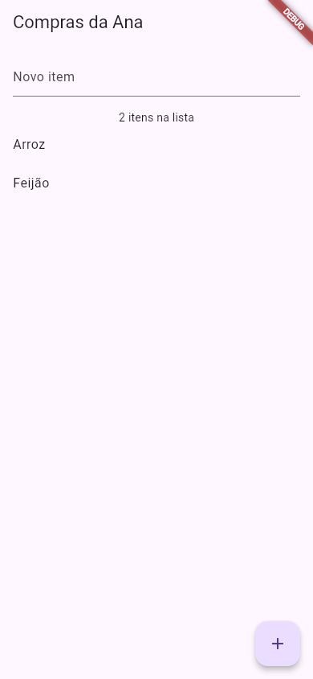

Flutter DevTools
O app da Ana às vezes "engasga" ao rolar a lista, e um botão aparece um pouco fora do lugar. Olhando só a tela, é difícil saber por quê. O Flutter DevTools (as "ferramentas do desenvolvedor") é um painel que abre no navegador, ligado ao app que está rodando, e mostra o que acontece por dentro: a árvore de widgets, o tamanho e a posição de cada caixa, quanto tempo cada quadro levou para ser desenhado, quanta memória o app usa, as mensagens de print e as requisições de rede.
- Como abrir o DevTools: pelo link que o
flutter runmostra, pelo editor (VS Code, Android Studio) ou comdart devtools. - O que cada aba faz: Inspector, Performance, CPU Profiler, Memory, Debugger, Network, Logging e App Size.
- Como usar o
debugPrintpara mandar recados ao console. - Por que medir desempenho em modo profile, e não em debug.
- Os problemas mais comuns na hora de abrir.
As saídas do terminal (flutter run, dart devtools) e o console do debugPrint vieram do Flutter 3.47.7 (DevTools 2.60.0) da máquina da Ana. As descrições das abas do painel seguem a documentação oficial (docs.flutter.dev/tools/devtools) e são ilustrativas: os nomes dos botões e a arrumação das abas mudam um pouco de uma versão do DevTools para outra.
A ideia: o painel do mecânico
Quando um carro faz um barulho estranho, o mecânico não adivinha: ele liga um aparelho na tomada do painel e lê o que os sensores dizem (rotação, temperatura, erros gravados). O DevTools é esse aparelho para o app. O "cabo" que liga os dois é o Dart VM Service, um canal que todo app Flutter em modo debug ou profile abre enquanto roda. O DevTools se conecta nesse canal e pergunta coisas ao app: "quais widgets você tem?", "quanto tempo levou esse quadro?", "quanta memória está usando?".
seu app rodando ⇄ Dart VM Service (http://127.0.0.1:PORTA/…) ⇄ DevTools no navegador
Por isso o DevTools não funciona com um app em modo release (o da loja): nele esse canal não existe.
1. Abrindo pelo flutter run
O jeito mais direto: rode o app pelo terminal (veja flutter run). Logo depois das teclas de atalho, o Flutter mostra dois links. A Ana rodou o app de compras como app de desktop do Linux:
$ flutter run -d linux Launching lib/main.dart on Linux in debug mode... Building Linux application... ✓ Built build/linux/x64/debug/bundle/compras [IMPORTANT:flutter/shell/platform/embedder/embedder_surface_gl_impeller.cc(126)] Using the Impeller rendering backend (OpenGLESSDF). Syncing files to device Linux... 84ms Flutter run key commands. r Hot reload. 🔥🔥🔥 R Hot restart. h List all available interactive commands. d Detach (terminate "flutter run" but leave application running). c Clear the screen q Quit (terminate the application on the device). A Dart VM Service on Linux is available at: http://127.0.0.1:38595/a-alQiXiR-o=/ The Flutter DevTools debugger and profiler on Linux is available at: http://127.0.0.1:38595/a-alQiXiR-o=/devtools/?uri=ws://127.0.0.1:38595/a-alQiXiR-o=/ws
- [IMPORTANT:…] Using the Impeller rendering backend
- Um aviso informativo do motor: o app está desenhando com o Impeller, o motor gráfico atual do Flutter. Não é erro.
- A Dart VM Service … is available at: http://127.0.0.1:38595/a-alQiXiR-o=/
- "O serviço da VM Dart está disponível em…". É o canal do app.
127.0.0.1é o próprio computador;38595é a porta, sorteada a cada execução;a-alQiXiR-o=é uma senha curta que também muda a cada vez (só quem tem o link inteiro consegue se conectar). - The Flutter DevTools debugger and profiler … is available at: …/devtools/?uri=ws://…
- "O depurador e medidor DevTools está disponível em…". Este é o link para abrir. Ele já leva no fim (
?uri=ws://…) o endereço do canal do app, então o painel abre conectado. Na maioria dos terminais, segure Ctrl e clique no link.
Os links mudam toda vez que você roda o app: não adianta salvar nos favoritos. No celular Android ou no emulador, a linha é a mesma, com o nome do aparelho no lugar de Linux.
2. Outras formas de abrir
| Onde | Como |
|---|---|
| VS Code (extensão Flutter) | Com o app rodando pelo editor (F5), abra a paleta de comandos (Ctrl+Shift+P) e procure Open DevTools. Ele pode abrir dentro do próprio VS Code ou no navegador (veja O Editor). |
| Android Studio | Com o app rodando, a janela Flutter Inspector fica na lateral; o botão Open DevTools abre o painel completo. |
| Terminal, sem app | dart devtools sobe o painel sozinho; depois você cola nele o link do VM Service (a primeira linha que o flutter run mostra). |
$ dart devtools --no-launch-browser
Serving DevTools at http://127.0.0.1:9100.
Hit ctrl-c to terminate the server.
"Servindo o DevTools em http://127.0.0.1:9100. Aperte Ctrl+C para encerrar o servidor." Sem o --no-launch-browser, o navegador abre sozinho nesse endereço. A porta padrão é a 9100; --port=0 escolhe qualquer porta livre (está no dart devtools --help).
3. As abas, uma por uma
O painel tem uma barra de abas no topo. Cada uma responde uma pergunta diferente:
| Aba | Responde… | Quando a Ana usa |
|---|---|---|
| Flutter Inspector | "Quais widgets estão na tela, um dentro do outro, e qual o tamanho de cada um?" | Um botão fora do lugar, um espaço que não devia existir, listras de estouro |
| Performance | "Quanto tempo cada quadro levou?" | A rolagem engasga; uma animação treme |
| CPU Profiler | "Qual função gastou mais tempo?" | Depois de achar o quadro lento, descobrir o culpado |
| Memory | "Quanta memória o app usa, e ela só cresce?" | O app fica lento depois de muito tempo aberto |
| Debugger | "Qual o valor das variáveis nesta linha?" | Um cálculo dá errado e ela quer ver passo a passo |
| Network | "Que requisições o app fez, e o que voltou?" | A tela de receitas não carrega da internet (veja HTTP) |
| Logging | "O que o app escreveu no console?" | Ler os debugPrint e os erros do Flutter |
| App Size | "O que ocupa espaço no APK?" | O app ficou grande demais (veja Gerando o APK) |
3.1 Flutter Inspector: a árvore de widgets ao vivo
É a aba que você mais vai usar. À esquerda, a árvore do app, a mesma que você imagina ao ler o código. No app de compras, ela mostra algo assim (ilustrativo, resumido):
AppCompras
└── MaterialApp
└── TelaCompras
└── Scaffold
├── AppBar
│ └── Text "Compras da Ana"
├── Column
│ ├── Padding
│ │ └── TextField
│ ├── Text "1 itens na lista"
│ └── Expanded
│ └── ListView
│ └── ListTile
│ └── Text "Arroz"
└── FloatingActionButton
└── Icon
Ao clicar num widget da árvore, o lado direito mostra as propriedades dele e um desenho das restrições e do tamanho final (largura × altura, o padding, o flex), o mesmo assunto de Restrições. Três botões ajudam muito:
- Select Widget Mode ("modo selecionar widget"): você toca num pedaço da tela do app, no celular, e o Inspector pula para aquele widget na árvore. É o jeito mais rápido de descobrir "quem desenhou isto aqui?".
- Show Guidelines ("mostrar linhas-guia"): desenha, no próprio app, as bordas de cada caixa, o padding e o alinhamento.
- Layout Explorer ("explorador de layout"): para uma
RowouColumn, mostra os filhos lado a lado e deixa você trocar omainAxisAlignmente oflexali mesmo, para testar antes de mudar o código.
3.2 Performance e CPU Profiler: o app engasgou
Para a tela parecer lisa, o Flutter precisa desenhar cerca de 60 quadros por segundo: cerca de 16 milissegundos por quadro (em telas de 120 Hz, a metade). A aba Performance mostra um gráfico de barras, uma barra por quadro. As barras que passaram do tempo aparecem em vermelho: são os "engasgos" (em inglês, jank). Clicando numa barra vermelha você vê o que aquele quadro fez. Em seguida, o CPU Profiler grava alguns segundos de uso e lista as funções que mais gastaram tempo: muitas vezes é um cálculo pesado dentro de um build, que roda a cada redesenho.
Em modo debug o app é bem mais lento de propósito (ele guarda informações para o hot reload e faz verificações extras). Para medir desempenho, rode flutter run --profile num aparelho de verdade: é quase tão rápido quanto o app da loja e ainda abre o canal para o DevTools. O modo profile não funciona em emuladores e simuladores, e os números de lá não refletem o celular real: a documentação recomenda o aparelho físico.
3.3 Debugger: parar numa linha
Na aba Debugger, você abre o arquivo main.dart, clica à esquerda de uma linha (por exemplo, a do setState do _adicionar) e marca um ponto de parada (breakpoint). Quando a Ana toca no +, o app congela naquela linha e o painel mostra o valor de texto e de _itens. Os botões Step over ("pular por cima", a próxima linha) e Resume ("continuar") seguem dali. No VS Code e no Android Studio, o mesmo se faz direto no editor, clicando na margem do código.
3.4 Logging: os recados do app
A aba Logging junta tudo o que o app escreveu: os seus print e debugPrint, os erros do Flutter e as mensagens do sistema. Cada linha tem a hora; dá para filtrar por texto. É a mesma coisa que aparece no terminal do flutter run, só que organizada.
4. Mandando recados com debugPrint
Antes de abrir o Debugger, muitas vezes basta um recado no console. A Ana acrescentou uma linha no _adicionar do app de compras (a aula Testes de Widget mostra o app inteiro):
void _adicionar() {
final texto = _campo.text.trim();
if (texto.isEmpty) return;
setState(() => _itens.add(texto));
debugPrint('Item adicionado: $texto (total: ${_itens.length})');
_campo.clear();
}
Ela rodou o app, digitou "Arroz", tocou no +, digitou "Feijão" e tocou de novo. No console (e na aba Logging) apareceu:
Item adicionado: Arroz (total: 1) Item adicionado: Feijão (total: 2)

- debugPrint('…')
- Escreve uma linha no console, como o
print. A diferença: se você mandar muito texto de uma vez, odebugPrintespera e manda aos poucos, para o Android não cortar linhas. No Flutter, prefira ele aoprint. - $texto e ${_itens.length}
- Interpolação de texto do Dart: o valor da variável entra no meio da frase.
O flutter analyze reclama de print no código de lib/ (a regra avoid_print), justamente para você não esquecer recados no app que vai para a loja. Use, descubra o problema e apague.
Missão: acrescente um debugPrint no _adicionar, logo depois do setState, mostrando o item e o total, como o da Ana. Clique em ▶ Rodar, espere o app aparecer no DartPad, logo abaixo, adicione dois itens e olhe o console do DartPad (a área embaixo do app, na aba Output): os recados aparecem lá.
import 'package:flutter/material.dart';
void main() => runApp(const AppCompras());
class AppCompras extends StatelessWidget {
const AppCompras({super.key});
@override
Widget build(BuildContext context) {
return const MaterialApp(
title: 'Compras da Ana',
home: TelaCompras(),
);
}
}
class TelaCompras extends StatefulWidget {
const TelaCompras({super.key});
@override
State<TelaCompras> createState() => _TelaComprasState();
}
class _TelaComprasState extends State<TelaCompras> {
final _campo = TextEditingController();
final _itens = <String>[];
void _adicionar() {
final texto = _campo.text.trim();
if (texto.isEmpty) return;
setState(() => _itens.add(texto));
_campo.clear();
}
@override
Widget build(BuildContext context) {
return Scaffold(
appBar: AppBar(title: const Text('Compras da Ana')),
body: Column(
children: [
Padding(
padding: const EdgeInsets.all(16),
child: TextField(
key: const Key('campo-item'),
controller: _campo,
decoration: const InputDecoration(labelText: 'Novo item'),
),
),
Text('${_itens.length} itens na lista'),
Expanded(
child: ListView(
children: [for (final item in _itens) ListTile(title: Text(item))],
),
),
],
),
floatingActionButton: FloatingActionButton(
onPressed: _adicionar,
tooltip: 'Adicionar',
child: const Icon(Icons.add),
),
);
}
}
import 'package:flutter/material.dart';
void main() => runApp(const AppCompras());
class AppCompras extends StatelessWidget {
const AppCompras({super.key});
@override
Widget build(BuildContext context) {
return const MaterialApp(
title: 'Compras da Ana',
home: TelaCompras(),
);
}
}
class TelaCompras extends StatefulWidget {
const TelaCompras({super.key});
@override
State<TelaCompras> createState() => _TelaComprasState();
}
class _TelaComprasState extends State<TelaCompras> {
final _campo = TextEditingController();
final _itens = <String>[];
void _adicionar() {
final texto = _campo.text.trim();
if (texto.isEmpty) return;
setState(() => _itens.add(texto));
debugPrint('Item adicionado: $texto (total: ${_itens.length})');
_campo.clear();
}
@override
Widget build(BuildContext context) {
return Scaffold(
appBar: AppBar(title: const Text('Compras da Ana')),
body: Column(
children: [
Padding(
padding: const EdgeInsets.all(16),
child: TextField(
key: const Key('campo-item'),
controller: _campo,
decoration: const InputDecoration(labelText: 'Novo item'),
),
),
Text('${_itens.length} itens na lista'),
Expanded(
child: ListView(
children: [for (final item in _itens) ListTile(title: Text(item))],
),
),
],
),
floatingActionButton: FloatingActionButton(
onPressed: _adicionar,
tooltip: 'Adicionar',
child: const Icon(Icons.add),
),
);
}
}
5. Qual ferramenta usar
| O problema | Comece por |
|---|---|
| "Por que esse widget está aqui / desse tamanho?" | Inspector + Select Widget Mode |
| "Esse valor está certo nessa hora?" | debugPrint; se não bastar, Debugger com ponto de parada |
| "A rolagem engasga." | flutter run --profile no celular → Performance → CPU Profiler |
| "Os dados da internet não chegam." | Network |
| "O APK está grande." | App Size (com flutter build apk --analyze-size) |
Quando dá errado
flutter run não mostrou o link do DevTools
Rodando no dispositivo web-server (o app servido para qualquer navegador), a Ana não viu as linhas do VM Service. Em vez delas, apareceu este aviso:
$ flutter run -d web-server --web-port 8099 Launching lib/main.dart on Web Server in debug mode... Waiting for connection from debug service on Web Server... 24.7s lib/main.dart is being served at http://localhost:8099 The web-server device requires the Dart Debug Chrome extension for debugging. Consider using the Chrome or Edge devices for an improved development workflow.
"O dispositivo web-server precisa da extensão Dart Debug do Chrome para depurar. Considere usar os dispositivos Chrome ou Edge para um fluxo de desenvolvimento melhor." Como resolver: rode com flutter run -d chrome (ou -d edge), ou num celular, emulador ou desktop. O link também não aparece com --release: em release não existe o canal.
Você fechou o app ou apertou q no terminal, e o DevTools ficou aberto. Ele mostra que se desconectou (ilustrativo). O link antigo não serve mais: a porta e a senha mudam a cada flutter run. Como resolver: rode o app de novo e abra o link novo.
Quadros vermelhos por toda parte, mesmo num app simples? Provavelmente o app está em debug. Como resolver: antes de concluir que o app é lento, meça com flutter run --profile num aparelho de verdade.
Referência
| Comando / peça | Para que serve |
|---|---|
flutter run | Roda em debug e mostra o link do DevTools |
flutter run --profile | Roda em profile: para medir desempenho (aparelho de verdade) |
dart devtools | Sobe o painel sozinho (porta 9100 por padrão) |
dart devtools --port=0 | Usa qualquer porta livre |
debugPrint('…') | Recado no console (e na aba Logging) |
| Inspector → Select Widget Mode | Tocar na tela e achar o widget na árvore |
| Debugger → breakpoint | Parar o app numa linha e ver as variáveis |
Exercícios
1. O comando certo
Complete o comando que roda o app no modo certo para medir desempenho:
2. O recado
Complete a linha que escreve no console o total de itens:
3. Um botão aparece mais à direita do que devia. Que aba do DevTools ajuda primeiro?
4. Por que o DevTools não se conecta a um app em modo release?
5. Na aba Performance, o que significa uma barra vermelha?
6. Você salvou nos favoritos o link do DevTools de ontem. Hoje ele não abre. Por quê?
Resumo
- O DevTools é um painel no navegador que se liga ao app rodando (em debug ou profile) pelo Dart VM Service.
- Abra pelo link que o
flutter runmostra, pelo editor (Open DevTools) ou comdart devtools. - Inspector para layout; Performance e CPU Profiler para engasgos; Memory para memória; Debugger para parar numa linha; Network para a internet; Logging para os recados; App Size para o tamanho.
debugPrinté o recado rápido; apague antes de publicar.- Desempenho se mede com
flutter run --profilenum aparelho de verdade.